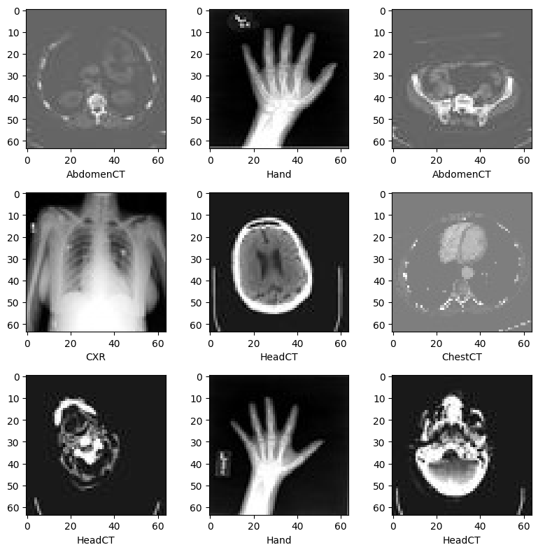
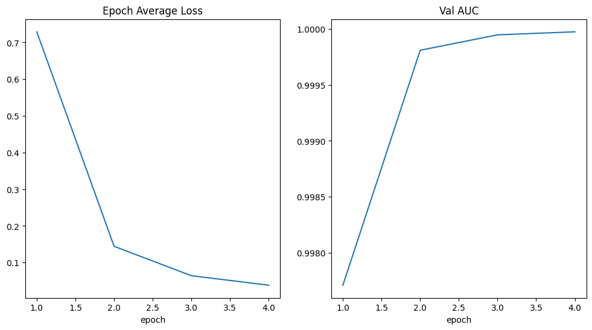

!python -c "import monai" || pip install -q "monai-weekly[pillow, tqdm]"
!python -c "import matplotlib" || pip install -q matplotlibMedical Image Classification - MONAI/Pytorch
Setup environment
Setup imports
import os
import shutil
import tempfile
import matplotlib.pyplot as plt
import PIL
import torch
# from torch.utils.tensorboard import SummaryWriter
import numpy as np
from sklearn.metrics import classification_report
from monai.apps import download_and_extract
from monai.config import print_config
from monai.data import decollate_batch, DataLoader
from monai.metrics import ROCAUCMetric
from monai.networks.nets import DenseNet121
from monai.transforms import (
Activations,
EnsureChannelFirst,
AsDiscrete,
Compose,
LoadImage,
RandFlip,
RandRotate,
RandZoom,
ScaleIntensity,
)
from monai.utils import set_determinism
print_config()MONAI version: 1.5.2
Numpy version: 2.4.2
Pytorch version: 2.6.0
MONAI flags: HAS_EXT = False, USE_COMPILED = False, USE_META_DICT = False
MONAI rev id: d18565fb3e4fd8c556707f91ac280a2dc3f681c1
MONAI __file__: /home/<username>/miniforge3/envs/biomonai_ignite/lib/python3.11/site-packages/monai/__init__.py
Optional dependencies:
Pytorch Ignite version: 0.5.3
ITK version: NOT INSTALLED or UNKNOWN VERSION.
Nibabel version: 5.3.3
scikit-image version: 0.26.0
scipy version: 1.17.0
Pillow version: 12.1.1
Tensorboard version: NOT INSTALLED or UNKNOWN VERSION.
gdown version: NOT INSTALLED or UNKNOWN VERSION.
TorchVision version: NOT INSTALLED or UNKNOWN VERSION.
tqdm version: 4.67.3
lmdb version: NOT INSTALLED or UNKNOWN VERSION.
psutil version: 7.2.2
pandas version: 3.0.0
einops version: 0.8.2
transformers version: NOT INSTALLED or UNKNOWN VERSION.
mlflow version: NOT INSTALLED or UNKNOWN VERSION.
pynrrd version: NOT INSTALLED or UNKNOWN VERSION.
clearml version: NOT INSTALLED or UNKNOWN VERSION.
For details about installing the optional dependencies, please visit:
https://docs.monai.io/en/latest/installation.html#installing-the-recommended-dependencies
Setup data directory
You can specify a directory with the MONAI_DATA_DIRECTORY environment variable.
This allows you to save results and reuse downloads.
If not specified a temporary directory will be used.
directory = os.environ.get("MONAI_DATA_DIRECTORY")
if directory is not None:
os.makedirs(directory, exist_ok=True)
root_dir = tempfile.mkdtemp() if directory is None else directory
print(root_dir)/tmp/tmp03bxhcxzDownload dataset
The MedNIST dataset was gathered from several sets from TCIA, the RSNA Bone Age Challenge, and the NIH Chest X-ray dataset.
The dataset is kindly made available by Dr. Bradley J. Erickson M.D., Ph.D. (Department of Radiology, Mayo Clinic) under the Creative Commons CC BY-SA 4.0 license.
If you use the MedNIST dataset, please acknowledge the source.
resource = "https://github.com/Project-MONAI/MONAI-extra-test-data/releases/download/0.8.1/MedNIST.tar.gz"
md5 = "0bc7306e7427e00ad1c5526a6677552d"
compressed_file = os.path.join(root_dir, "MedNIST.tar.gz")
data_dir = os.path.join(root_dir, "MedNIST")
if not os.path.exists(data_dir):
download_and_extract(resource, compressed_file, root_dir, md5)MedNIST.tar.gz: 59.0MB [00:05, 10.4MB/s] 2026-04-08 22:10:01,048 - INFO - Downloaded: /tmp/tmp03bxhcxz/MedNIST.tar.gz
2026-04-08 22:10:01,107 - INFO - Verified 'MedNIST.tar.gz', md5: 0bc7306e7427e00ad1c5526a6677552d.
2026-04-08 22:10:01,107 - INFO - Writing into directory: /tmp/tmp03bxhcxz.Set deterministic training for reproducibility
set_determinism(seed=0)Read image filenames from the dataset folders
First of all, check the dataset files and show some statistics.
There are 6 folders in the dataset: Hand, AbdomenCT, CXR, ChestCT, BreastMRI, HeadCT,
which should be used as the labels to train our classification model.
class_names = sorted(x for x in os.listdir(data_dir) if os.path.isdir(os.path.join(data_dir, x)))
num_class = len(class_names)
image_files = [
[os.path.join(data_dir, class_names[i], x) for x in os.listdir(os.path.join(data_dir, class_names[i]))]
for i in range(num_class)
]
num_each = [len(image_files[i]) for i in range(num_class)]
image_files_list = []
image_class = []
for i in range(num_class):
image_files_list.extend(image_files[i])
image_class.extend([i] * num_each[i])
num_total = len(image_class)
image_width, image_height = PIL.Image.open(image_files_list[0]).size
print(f"Total image count: {num_total}")
print(f"Image dimensions: {image_width} x {image_height}")
print(f"Label names: {class_names}")
print(f"Label counts: {num_each}")Total image count: 58954
Image dimensions: 64 x 64
Label names: ['AbdomenCT', 'BreastMRI', 'CXR', 'ChestCT', 'Hand', 'HeadCT']
Label counts: [10000, 8954, 10000, 10000, 10000, 10000]Prepare training, validation and test data lists
Randomly select 10% of the dataset as validation and 10% as test.
val_frac = 0.1
test_frac = 0.1
length = len(image_files_list)
indices = np.arange(length)
np.random.shuffle(indices)
test_split = int(test_frac * length)
val_split = int(val_frac * length) + test_split
test_indices = indices[:test_split]
val_indices = indices[test_split:val_split]
train_indices = indices[val_split:]
train_x = [image_files_list[i] for i in train_indices]
train_y = [image_class[i] for i in train_indices]
val_x = [image_files_list[i] for i in val_indices]
val_y = [image_class[i] for i in val_indices]
test_x = [image_files_list[i] for i in test_indices]
test_y = [image_class[i] for i in test_indices]
print(f"Training count: {len(train_x)}, Validation count: " f"{len(val_x)}, Test count: {len(test_x)}")Training count: 47164, Validation count: 5895, Test count: 5895Define MONAI transforms, Dataset and Dataloader to pre-process data
train_transforms = Compose(
[
LoadImage(image_only=True),
EnsureChannelFirst(),
ScaleIntensity(),
RandRotate(range_x=np.pi / 12, prob=0.5, keep_size=True),
RandFlip(spatial_axis=0, prob=0.5),
RandZoom(min_zoom=0.9, max_zoom=1.1, prob=0.5),
]
)
val_transforms = Compose([LoadImage(image_only=True), EnsureChannelFirst(), ScaleIntensity()])
y_pred_trans = Compose([Activations(softmax=True)])
y_trans = Compose([AsDiscrete(to_onehot=num_class)])class MedNISTDataset(torch.utils.data.Dataset):
def __init__(self, image_files, labels, transforms):
self.image_files = image_files
self.labels = labels
self.transforms = transforms
def __len__(self):
return len(self.image_files)
def __getitem__(self, index):
return self.transforms(self.image_files[index]), self.labels[index]
train_ds = MedNISTDataset(train_x, train_y, train_transforms)
train_loader = DataLoader(train_ds, batch_size=300, shuffle=True, num_workers=10)
val_ds = MedNISTDataset(val_x, val_y, val_transforms)
val_loader = DataLoader(val_ds, batch_size=300, num_workers=10)
test_ds = MedNISTDataset(test_x, test_y, val_transforms)
test_loader = DataLoader(test_ds, batch_size=300, num_workers=10)Randomly pick images from the dataset to visualize and check
plt.subplots(3, 3, figsize=(8, 8))
for i, k in enumerate(np.random.randint(num_total, size=9)):
im = PIL.Image.open(image_files_list[k])
arr = np.array(im)
plt.subplot(3, 3, i + 1)
plt.xlabel(class_names[image_class[k]])
plt.imshow(arr, cmap="gray", vmin=0, vmax=255)
plt.tight_layout()
plt.show()
Define network and optimizer
- Set learning rate for how much the model is updated per batch.
- Set total epoch number, as we have shuffle and random transforms, so the training data of every epoch is different.
And as this is just a get start tutorial, let’s just train 4 epochs.
If train 10 epochs, the model can achieve 100% accuracy on test dataset. - Use DenseNet from MONAI and move to GPU device, this DenseNet can support both 2D and 3D classification tasks.
- Use Adam optimizer.
device = torch.device("cuda" if torch.cuda.is_available() else "cpu")
model = DenseNet121(spatial_dims=2, in_channels=1, out_channels=num_class).to(device)
loss_function = torch.nn.CrossEntropyLoss()
optimizer = torch.optim.Adam(model.parameters(), 1e-5)
max_epochs = 4
val_interval = 1
auc_metric = ROCAUCMetric()Model training
Execute a typical PyTorch training that run epoch loop and step loop, and do validation after every epoch.
Will save the model weights to file if got best validation accuracy.
import torch
torch.cuda.empty_cache()
torch.cuda.reset_peak_memory_stats()import time
best_metric = -1
best_metric_epoch = -1
epoch_loss_values = []
metric_values = []
epoch_times = [] # NEW
for epoch in range(max_epochs):
epoch_start_time = time.time() # NEW
print("-" * 10)
print(f"epoch {epoch + 1}/{max_epochs}")
model.train()
epoch_loss = 0
step = 0
for batch_data in train_loader:
step += 1
inputs, labels = batch_data[0].to(device), batch_data[1].to(device)
optimizer.zero_grad()
outputs = model(inputs)
loss = loss_function(outputs, labels)
loss.backward()
optimizer.step()
epoch_loss += loss.item()
print(f"{step}/{len(train_ds) // train_loader.batch_size}, "
f"train_loss: {loss.item():.4f}")
epoch_loss /= step
epoch_loss_values.append(epoch_loss)
print(f"epoch {epoch + 1} average loss: {epoch_loss:.4f}")
if (epoch + 1) % val_interval == 0:
model.eval()
with torch.no_grad():
y_pred = torch.tensor([], dtype=torch.float32, device=device)
y = torch.tensor([], dtype=torch.long, device=device)
for val_data in val_loader:
val_images, val_labels = val_data[0].to(device), val_data[1].to(device)
y_pred = torch.cat([y_pred, model(val_images)], dim=0)
y = torch.cat([y, val_labels], dim=0)
y_onehot = [y_trans(i) for i in decollate_batch(y, detach=False)]
y_pred_act = [y_pred_trans(i) for i in decollate_batch(y_pred)]
auc_metric(y_pred_act, y_onehot)
result = auc_metric.aggregate()
auc_metric.reset()
metric_values.append(result)
acc_value = torch.eq(y_pred.argmax(dim=1), y)
acc_metric = acc_value.sum().item() / len(acc_value)
if result > best_metric:
best_metric = result
best_metric_epoch = epoch + 1
torch.save(model.state_dict(),
os.path.join(root_dir, "best_metric_model.pth"))
print("saved new best metric model")
print(
f"current epoch: {epoch + 1} current AUC: {result:.4f}"
f" current accuracy: {acc_metric:.4f}"
f" best AUC: {best_metric:.4f}"
f" at epoch: {best_metric_epoch}"
)
# END OF EPOCH TIMING
epoch_time = time.time() - epoch_start_time
epoch_times.append(epoch_time)
print(f"epoch {epoch + 1} time: {epoch_time:.2f} seconds") # NEW
# FINAL STATS
mean_time = np.mean(epoch_times)
std_time = np.std(epoch_times)
print(f"train completed, best_metric: {best_metric:.4f} at epoch: {best_metric_epoch}")
print(f"Average epoch time: {mean_time:.2f} ± {std_time:.2f} seconds")----------
epoch 1/4
1/157, train_loss: 1.7796
2/157, train_loss: 1.7687
3/157, train_loss: 1.7281
4/157, train_loss: 1.7134
5/157, train_loss: 1.6839
6/157, train_loss: 1.6668
7/157, train_loss: 1.6320
8/157, train_loss: 1.5986
9/157, train_loss: 1.5800
10/157, train_loss: 1.5387
11/157, train_loss: 1.5587
12/157, train_loss: 1.5119
13/157, train_loss: 1.4976
14/157, train_loss: 1.4616
15/157, train_loss: 1.4369
16/157, train_loss: 1.4380
17/157, train_loss: 1.4216
18/157, train_loss: 1.3951
19/157, train_loss: 1.3646
20/157, train_loss: 1.3556
21/157, train_loss: 1.3309
22/157, train_loss: 1.3110
23/157, train_loss: 1.2893
24/157, train_loss: 1.2686
25/157, train_loss: 1.2692
26/157, train_loss: 1.2015
27/157, train_loss: 1.1918
28/157, train_loss: 1.2000
29/157, train_loss: 1.1923
30/157, train_loss: 1.1965
31/157, train_loss: 1.1729
32/157, train_loss: 1.1435
33/157, train_loss: 1.1432
34/157, train_loss: 1.0987
35/157, train_loss: 1.1013
36/157, train_loss: 1.0860
37/157, train_loss: 1.0861
38/157, train_loss: 1.0658
39/157, train_loss: 1.0025
40/157, train_loss: 1.0124
41/157, train_loss: 0.9927
42/157, train_loss: 0.9568
43/157, train_loss: 0.9868
44/157, train_loss: 0.9889
45/157, train_loss: 0.9509
46/157, train_loss: 0.9355
47/157, train_loss: 0.8905
48/157, train_loss: 0.9040
49/157, train_loss: 0.8964
50/157, train_loss: 0.9208
51/157, train_loss: 0.8768
52/157, train_loss: 0.8792
53/157, train_loss: 0.8309
54/157, train_loss: 0.8291
55/157, train_loss: 0.8163
56/157, train_loss: 0.8150
57/157, train_loss: 0.7713
58/157, train_loss: 0.8075
59/157, train_loss: 0.7633
60/157, train_loss: 0.7714
61/157, train_loss: 0.7687
62/157, train_loss: 0.7470
63/157, train_loss: 0.7879
64/157, train_loss: 0.7337
65/157, train_loss: 0.7448
66/157, train_loss: 0.7157
67/157, train_loss: 0.6829
68/157, train_loss: 0.6660
69/157, train_loss: 0.6391
70/157, train_loss: 0.6837
71/157, train_loss: 0.6634
72/157, train_loss: 0.6406
73/157, train_loss: 0.6864
74/157, train_loss: 0.6247
75/157, train_loss: 0.6418
76/157, train_loss: 0.6541
77/157, train_loss: 0.6092
78/157, train_loss: 0.5753
79/157, train_loss: 0.5947
80/157, train_loss: 0.5864
81/157, train_loss: 0.5898
82/157, train_loss: 0.5403
83/157, train_loss: 0.5475
84/157, train_loss: 0.5678
85/157, train_loss: 0.5509
86/157, train_loss: 0.5373
87/157, train_loss: 0.5459
88/157, train_loss: 0.5139
89/157, train_loss: 0.5375
90/157, train_loss: 0.5115
91/157, train_loss: 0.5021
92/157, train_loss: 0.5048
93/157, train_loss: 0.5075
94/157, train_loss: 0.4977
95/157, train_loss: 0.4468
96/157, train_loss: 0.4711
97/157, train_loss: 0.4915
98/157, train_loss: 0.4762
99/157, train_loss: 0.4648
100/157, train_loss: 0.4730
101/157, train_loss: 0.4415
102/157, train_loss: 0.4443
103/157, train_loss: 0.4326
104/157, train_loss: 0.4422
105/157, train_loss: 0.4263
106/157, train_loss: 0.4020
107/157, train_loss: 0.4098
108/157, train_loss: 0.4449
109/157, train_loss: 0.3966
110/157, train_loss: 0.4213
111/157, train_loss: 0.3801
112/157, train_loss: 0.4087
113/157, train_loss: 0.3852
114/157, train_loss: 0.3840
115/157, train_loss: 0.3852
116/157, train_loss: 0.3462
117/157, train_loss: 0.3573
118/157, train_loss: 0.3239
119/157, train_loss: 0.3946
120/157, train_loss: 0.3621
121/157, train_loss: 0.4096
122/157, train_loss: 0.3570
123/157, train_loss: 0.3568
124/157, train_loss: 0.3296
125/157, train_loss: 0.3221
126/157, train_loss: 0.3448
127/157, train_loss: 0.3288
128/157, train_loss: 0.3420
129/157, train_loss: 0.3312
130/157, train_loss: 0.3395
131/157, train_loss: 0.3067
132/157, train_loss: 0.3396
133/157, train_loss: 0.3141
134/157, train_loss: 0.3000
135/157, train_loss: 0.2884
136/157, train_loss: 0.3134
137/157, train_loss: 0.2838
138/157, train_loss: 0.2972
139/157, train_loss: 0.3074
140/157, train_loss: 0.2634
141/157, train_loss: 0.2544
142/157, train_loss: 0.2773
143/157, train_loss: 0.3061
144/157, train_loss: 0.3096
145/157, train_loss: 0.2777
146/157, train_loss: 0.2759
147/157, train_loss: 0.2647
148/157, train_loss: 0.2713
149/157, train_loss: 0.2768
150/157, train_loss: 0.2652
151/157, train_loss: 0.2647
152/157, train_loss: 0.2738
153/157, train_loss: 0.2635
154/157, train_loss: 0.2641
155/157, train_loss: 0.2609
156/157, train_loss: 0.2316
157/157, train_loss: 0.2436
158/157, train_loss: 0.3601
epoch 1 average loss: 0.7292
saved new best metric model
current epoch: 1 current AUC: 0.9977 current accuracy: 0.9652 best AUC: 0.9977 at epoch: 1
epoch 1 time: 15.78 seconds
----------
epoch 2/4
1/157, train_loss: 0.2657
2/157, train_loss: 0.2200
3/157, train_loss: 0.2472
4/157, train_loss: 0.2395
5/157, train_loss: 0.2177
6/157, train_loss: 0.2315
7/157, train_loss: 0.2260
8/157, train_loss: 0.2164
9/157, train_loss: 0.2638
10/157, train_loss: 0.2330
11/157, train_loss: 0.1967
12/157, train_loss: 0.2155
13/157, train_loss: 0.2096
14/157, train_loss: 0.2290
15/157, train_loss: 0.1917
16/157, train_loss: 0.2130
17/157, train_loss: 0.2255
18/157, train_loss: 0.2003
19/157, train_loss: 0.2013
20/157, train_loss: 0.1842
21/157, train_loss: 0.2058
22/157, train_loss: 0.2388
23/157, train_loss: 0.2240
24/157, train_loss: 0.1941
25/157, train_loss: 0.2165
26/157, train_loss: 0.1816
27/157, train_loss: 0.1895
28/157, train_loss: 0.2082
29/157, train_loss: 0.1796
30/157, train_loss: 0.1510
31/157, train_loss: 0.2267
32/157, train_loss: 0.2045
33/157, train_loss: 0.1919
34/157, train_loss: 0.2015
35/157, train_loss: 0.1787
36/157, train_loss: 0.1885
37/157, train_loss: 0.1696
38/157, train_loss: 0.1693
39/157, train_loss: 0.1725
40/157, train_loss: 0.1879
41/157, train_loss: 0.1811
42/157, train_loss: 0.1643
43/157, train_loss: 0.1275
44/157, train_loss: 0.1754
45/157, train_loss: 0.1273
46/157, train_loss: 0.1818
47/157, train_loss: 0.1218
48/157, train_loss: 0.1765
49/157, train_loss: 0.1922
50/157, train_loss: 0.1715
51/157, train_loss: 0.1572
52/157, train_loss: 0.1460
53/157, train_loss: 0.1790
54/157, train_loss: 0.1298
55/157, train_loss: 0.1797
56/157, train_loss: 0.1564
57/157, train_loss: 0.1736
58/157, train_loss: 0.1580
59/157, train_loss: 0.1419
60/157, train_loss: 0.1664
61/157, train_loss: 0.1356
62/157, train_loss: 0.1352
63/157, train_loss: 0.1452
64/157, train_loss: 0.1273
65/157, train_loss: 0.1575
66/157, train_loss: 0.1663
67/157, train_loss: 0.1445
68/157, train_loss: 0.1487
69/157, train_loss: 0.1281
70/157, train_loss: 0.1114
71/157, train_loss: 0.1523
72/157, train_loss: 0.1399
73/157, train_loss: 0.1379
74/157, train_loss: 0.1622
75/157, train_loss: 0.1357
76/157, train_loss: 0.1503
77/157, train_loss: 0.1457
78/157, train_loss: 0.1476
79/157, train_loss: 0.1447
80/157, train_loss: 0.1435
81/157, train_loss: 0.1502
82/157, train_loss: 0.1071
83/157, train_loss: 0.1334
84/157, train_loss: 0.1478
85/157, train_loss: 0.1234
86/157, train_loss: 0.1168
87/157, train_loss: 0.1149
88/157, train_loss: 0.1106
89/157, train_loss: 0.1178
90/157, train_loss: 0.1199
91/157, train_loss: 0.1002
92/157, train_loss: 0.1268
93/157, train_loss: 0.1313
94/157, train_loss: 0.1396
95/157, train_loss: 0.1320
96/157, train_loss: 0.1297
97/157, train_loss: 0.1417
98/157, train_loss: 0.1065
99/157, train_loss: 0.1154
100/157, train_loss: 0.1209
101/157, train_loss: 0.1261
102/157, train_loss: 0.1063
103/157, train_loss: 0.1000
104/157, train_loss: 0.1222
105/157, train_loss: 0.1355
106/157, train_loss: 0.1364
107/157, train_loss: 0.1334
108/157, train_loss: 0.1047
109/157, train_loss: 0.1127
110/157, train_loss: 0.1167
111/157, train_loss: 0.0966
112/157, train_loss: 0.0913
113/157, train_loss: 0.1450
114/157, train_loss: 0.1260
115/157, train_loss: 0.1391
116/157, train_loss: 0.1032
117/157, train_loss: 0.0991
118/157, train_loss: 0.1300
119/157, train_loss: 0.1072
120/157, train_loss: 0.0961
121/157, train_loss: 0.0949
122/157, train_loss: 0.1098
123/157, train_loss: 0.1017
124/157, train_loss: 0.1328
125/157, train_loss: 0.0890
126/157, train_loss: 0.1016
127/157, train_loss: 0.0826
128/157, train_loss: 0.0859
129/157, train_loss: 0.1055
130/157, train_loss: 0.0975
131/157, train_loss: 0.0949
132/157, train_loss: 0.1045
133/157, train_loss: 0.1087
134/157, train_loss: 0.1037
135/157, train_loss: 0.1121
136/157, train_loss: 0.1009
137/157, train_loss: 0.1135
138/157, train_loss: 0.1030
139/157, train_loss: 0.0918
140/157, train_loss: 0.1088
141/157, train_loss: 0.1052
142/157, train_loss: 0.1015
143/157, train_loss: 0.0804
144/157, train_loss: 0.1031
145/157, train_loss: 0.0937
146/157, train_loss: 0.0798
147/157, train_loss: 0.0942
148/157, train_loss: 0.0809
149/157, train_loss: 0.0729
150/157, train_loss: 0.1117
151/157, train_loss: 0.0995
152/157, train_loss: 0.0935
153/157, train_loss: 0.0889
154/157, train_loss: 0.0868
155/157, train_loss: 0.0832
156/157, train_loss: 0.0753
157/157, train_loss: 0.0743
158/157, train_loss: 0.0558
epoch 2 average loss: 0.1444
saved new best metric model
current epoch: 2 current AUC: 0.9998 current accuracy: 0.9856 best AUC: 0.9998 at epoch: 2
epoch 2 time: 15.48 seconds
----------
epoch 3/4
1/157, train_loss: 0.0734
2/157, train_loss: 0.0881
3/157, train_loss: 0.0857
4/157, train_loss: 0.0828
5/157, train_loss: 0.1003
6/157, train_loss: 0.1006
7/157, train_loss: 0.0888
8/157, train_loss: 0.0781
9/157, train_loss: 0.0832
10/157, train_loss: 0.0825
11/157, train_loss: 0.0736
12/157, train_loss: 0.0764
13/157, train_loss: 0.0631
14/157, train_loss: 0.0688
15/157, train_loss: 0.0674
16/157, train_loss: 0.0971
17/157, train_loss: 0.0742
18/157, train_loss: 0.0705
19/157, train_loss: 0.0684
20/157, train_loss: 0.0894
21/157, train_loss: 0.0779
22/157, train_loss: 0.0948
23/157, train_loss: 0.0834
24/157, train_loss: 0.0732
25/157, train_loss: 0.0775
26/157, train_loss: 0.0916
27/157, train_loss: 0.0892
28/157, train_loss: 0.1073
29/157, train_loss: 0.0681
30/157, train_loss: 0.0864
31/157, train_loss: 0.0847
32/157, train_loss: 0.0969
33/157, train_loss: 0.0907
34/157, train_loss: 0.0678
35/157, train_loss: 0.0824
36/157, train_loss: 0.0752
37/157, train_loss: 0.0823
38/157, train_loss: 0.0702
39/157, train_loss: 0.0587
40/157, train_loss: 0.0746
41/157, train_loss: 0.0747
42/157, train_loss: 0.0846
43/157, train_loss: 0.0847
44/157, train_loss: 0.0681
45/157, train_loss: 0.0656
46/157, train_loss: 0.0706
47/157, train_loss: 0.0628
48/157, train_loss: 0.0873
49/157, train_loss: 0.0591
50/157, train_loss: 0.0696
51/157, train_loss: 0.0685
52/157, train_loss: 0.0911
53/157, train_loss: 0.0780
54/157, train_loss: 0.0779
55/157, train_loss: 0.0716
56/157, train_loss: 0.0503
57/157, train_loss: 0.0714
58/157, train_loss: 0.0808
59/157, train_loss: 0.0515
60/157, train_loss: 0.0641
61/157, train_loss: 0.0913
62/157, train_loss: 0.0609
63/157, train_loss: 0.0657
64/157, train_loss: 0.0677
65/157, train_loss: 0.0744
66/157, train_loss: 0.0734
67/157, train_loss: 0.0626
68/157, train_loss: 0.0959
69/157, train_loss: 0.0676
70/157, train_loss: 0.0697
71/157, train_loss: 0.0634
72/157, train_loss: 0.0491
73/157, train_loss: 0.0531
74/157, train_loss: 0.0768
75/157, train_loss: 0.0627
76/157, train_loss: 0.0654
77/157, train_loss: 0.0634
78/157, train_loss: 0.0554
79/157, train_loss: 0.0670
80/157, train_loss: 0.0657
81/157, train_loss: 0.0679
82/157, train_loss: 0.0627
83/157, train_loss: 0.0550
84/157, train_loss: 0.0569
85/157, train_loss: 0.0643
86/157, train_loss: 0.0522
87/157, train_loss: 0.0502
88/157, train_loss: 0.0594
89/157, train_loss: 0.0448
90/157, train_loss: 0.0508
91/157, train_loss: 0.0475
92/157, train_loss: 0.0658
93/157, train_loss: 0.0600
94/157, train_loss: 0.0688
95/157, train_loss: 0.0527
96/157, train_loss: 0.0428
97/157, train_loss: 0.0426
98/157, train_loss: 0.0390
99/157, train_loss: 0.0723
100/157, train_loss: 0.0736
101/157, train_loss: 0.0739
102/157, train_loss: 0.0692
103/157, train_loss: 0.0526
104/157, train_loss: 0.0484
105/157, train_loss: 0.0798
106/157, train_loss: 0.0596
107/157, train_loss: 0.0667
108/157, train_loss: 0.0709
109/157, train_loss: 0.0646
110/157, train_loss: 0.0503
111/157, train_loss: 0.0505
112/157, train_loss: 0.0657
113/157, train_loss: 0.0356
114/157, train_loss: 0.0499
115/157, train_loss: 0.0552
116/157, train_loss: 0.0624
117/157, train_loss: 0.0428
118/157, train_loss: 0.0528
119/157, train_loss: 0.0678
120/157, train_loss: 0.0433
121/157, train_loss: 0.0396
122/157, train_loss: 0.0533
123/157, train_loss: 0.0490
124/157, train_loss: 0.0639
125/157, train_loss: 0.0728
126/157, train_loss: 0.0543
127/157, train_loss: 0.0401
128/157, train_loss: 0.0506
129/157, train_loss: 0.0512
130/157, train_loss: 0.0580
131/157, train_loss: 0.0456
132/157, train_loss: 0.0658
133/157, train_loss: 0.0421
134/157, train_loss: 0.0654
135/157, train_loss: 0.0430
136/157, train_loss: 0.0446
137/157, train_loss: 0.0448
138/157, train_loss: 0.0429
139/157, train_loss: 0.0332
140/157, train_loss: 0.0489
141/157, train_loss: 0.0371
142/157, train_loss: 0.0381
143/157, train_loss: 0.0398
144/157, train_loss: 0.0528
145/157, train_loss: 0.0386
146/157, train_loss: 0.0485
147/157, train_loss: 0.0449
148/157, train_loss: 0.0421
149/157, train_loss: 0.0342
150/157, train_loss: 0.0455
151/157, train_loss: 0.0538
152/157, train_loss: 0.0369
153/157, train_loss: 0.0532
154/157, train_loss: 0.0498
155/157, train_loss: 0.0430
156/157, train_loss: 0.0587
157/157, train_loss: 0.0447
158/157, train_loss: 0.0404
epoch 3 average loss: 0.0641
saved new best metric model
current epoch: 3 current AUC: 0.9999 current accuracy: 0.9929 best AUC: 0.9999 at epoch: 3
epoch 3 time: 15.40 seconds
----------
epoch 4/4
1/157, train_loss: 0.0423
2/157, train_loss: 0.0368
3/157, train_loss: 0.0554
4/157, train_loss: 0.0432
5/157, train_loss: 0.0366
6/157, train_loss: 0.0342
7/157, train_loss: 0.0560
8/157, train_loss: 0.0402
9/157, train_loss: 0.0410
10/157, train_loss: 0.0375
11/157, train_loss: 0.0645
12/157, train_loss: 0.0397
13/157, train_loss: 0.0390
14/157, train_loss: 0.0561
15/157, train_loss: 0.0312
16/157, train_loss: 0.0315
17/157, train_loss: 0.0498
18/157, train_loss: 0.0632
19/157, train_loss: 0.0315
20/157, train_loss: 0.0341
21/157, train_loss: 0.0521
22/157, train_loss: 0.0468
23/157, train_loss: 0.0366
24/157, train_loss: 0.0436
25/157, train_loss: 0.0356
26/157, train_loss: 0.0340
27/157, train_loss: 0.0393
28/157, train_loss: 0.0356
29/157, train_loss: 0.0418
30/157, train_loss: 0.0368
31/157, train_loss: 0.0456
32/157, train_loss: 0.0376
33/157, train_loss: 0.0473
34/157, train_loss: 0.0404
35/157, train_loss: 0.0460
36/157, train_loss: 0.0459
37/157, train_loss: 0.0363
38/157, train_loss: 0.0398
39/157, train_loss: 0.0398
40/157, train_loss: 0.0516
41/157, train_loss: 0.0472
42/157, train_loss: 0.0458
43/157, train_loss: 0.0313
44/157, train_loss: 0.0366
45/157, train_loss: 0.0494
46/157, train_loss: 0.0589
47/157, train_loss: 0.0644
48/157, train_loss: 0.0441
49/157, train_loss: 0.0482
50/157, train_loss: 0.0314
51/157, train_loss: 0.0314
52/157, train_loss: 0.0493
53/157, train_loss: 0.0439
54/157, train_loss: 0.0408
55/157, train_loss: 0.0296
56/157, train_loss: 0.0420
57/157, train_loss: 0.0256
58/157, train_loss: 0.0300
59/157, train_loss: 0.0358
60/157, train_loss: 0.0500
61/157, train_loss: 0.0537
62/157, train_loss: 0.0435
63/157, train_loss: 0.0433
64/157, train_loss: 0.0367
65/157, train_loss: 0.0387
66/157, train_loss: 0.0339
67/157, train_loss: 0.0258
68/157, train_loss: 0.0599
69/157, train_loss: 0.0335
70/157, train_loss: 0.0460
71/157, train_loss: 0.0364
72/157, train_loss: 0.0463
73/157, train_loss: 0.0297
74/157, train_loss: 0.0355
75/157, train_loss: 0.0425
76/157, train_loss: 0.0348
77/157, train_loss: 0.0421
78/157, train_loss: 0.0690
79/157, train_loss: 0.0397
80/157, train_loss: 0.0423
81/157, train_loss: 0.0366
82/157, train_loss: 0.0507
83/157, train_loss: 0.0342
84/157, train_loss: 0.0414
85/157, train_loss: 0.0285
86/157, train_loss: 0.0455
87/157, train_loss: 0.0416
88/157, train_loss: 0.0406
89/157, train_loss: 0.0445
90/157, train_loss: 0.0383
91/157, train_loss: 0.0338
92/157, train_loss: 0.0350
93/157, train_loss: 0.0599
94/157, train_loss: 0.0499
95/157, train_loss: 0.0474
96/157, train_loss: 0.0471
97/157, train_loss: 0.0354
98/157, train_loss: 0.0235
99/157, train_loss: 0.0338
100/157, train_loss: 0.0262
101/157, train_loss: 0.0291
102/157, train_loss: 0.0454
103/157, train_loss: 0.0354
104/157, train_loss: 0.0358
105/157, train_loss: 0.0343
106/157, train_loss: 0.0315
107/157, train_loss: 0.0256
108/157, train_loss: 0.0487
109/157, train_loss: 0.0234
110/157, train_loss: 0.0242
111/157, train_loss: 0.0352
112/157, train_loss: 0.0288
113/157, train_loss: 0.0318
114/157, train_loss: 0.0286
115/157, train_loss: 0.0293
116/157, train_loss: 0.0230
117/157, train_loss: 0.0235
118/157, train_loss: 0.0316
119/157, train_loss: 0.0259
120/157, train_loss: 0.0320
121/157, train_loss: 0.0248
122/157, train_loss: 0.0221
123/157, train_loss: 0.0263
124/157, train_loss: 0.0354
125/157, train_loss: 0.0207
126/157, train_loss: 0.0333
127/157, train_loss: 0.0432
128/157, train_loss: 0.0311
129/157, train_loss: 0.0388
130/157, train_loss: 0.0584
131/157, train_loss: 0.0249
132/157, train_loss: 0.0381
133/157, train_loss: 0.0345
134/157, train_loss: 0.0288
135/157, train_loss: 0.0449
136/157, train_loss: 0.0242
137/157, train_loss: 0.0461
138/157, train_loss: 0.0273
139/157, train_loss: 0.0467
140/157, train_loss: 0.0224
141/157, train_loss: 0.0350
142/157, train_loss: 0.0443
143/157, train_loss: 0.0296
144/157, train_loss: 0.0344
145/157, train_loss: 0.0202
146/157, train_loss: 0.0411
147/157, train_loss: 0.0306
148/157, train_loss: 0.0227
149/157, train_loss: 0.0366
150/157, train_loss: 0.0445
151/157, train_loss: 0.0399
152/157, train_loss: 0.0307
153/157, train_loss: 0.0364
154/157, train_loss: 0.0202
155/157, train_loss: 0.0263
156/157, train_loss: 0.0322
157/157, train_loss: 0.0285
158/157, train_loss: 0.0423
epoch 4 average loss: 0.0383
saved new best metric model
current epoch: 4 current AUC: 1.0000 current accuracy: 0.9961 best AUC: 1.0000 at epoch: 4
epoch 4 time: 15.60 seconds
train completed, best_metric: 1.0000 at epoch: 4
Average epoch time: 15.57 ± 0.14 secondsPlot the loss and metric
plt.figure("train", (12, 6))
plt.subplot(1, 2, 1)
plt.title("Epoch Average Loss")
x = [i + 1 for i in range(len(epoch_loss_values))]
y = epoch_loss_values
plt.xlabel("epoch")
plt.plot(x, y)
plt.subplot(1, 2, 2)
plt.title("Val AUC")
x = [val_interval * (i + 1) for i in range(len(metric_values))]
y = metric_values
plt.xlabel("epoch")
plt.plot(x, y)
plt.show()
torch.cuda.max_memory_allocated() / 1024**23237.05078125Evaluate the model on test dataset
After training and validation, we already got the best model on validation test.
We need to evaluate the model on test dataset to check whether it’s robust and not over-fitting.
We’ll use these predictions to generate a classification report.
model.load_state_dict(torch.load(os.path.join(root_dir, "best_metric_model.pth"), weights_only=True))
model.eval()
y_true = []
y_pred = []
with torch.no_grad():
for test_data in test_loader:
test_images, test_labels = (
test_data[0].to(device),
test_data[1].to(device),
)
pred = model(test_images).argmax(dim=1)
for i in range(len(pred)):
y_true.append(test_labels[i].item())
y_pred.append(pred[i].item())print(classification_report(y_true, y_pred, target_names=class_names, digits=4)) precision recall f1-score support
AbdomenCT 0.9899 0.9909 0.9904 993
BreastMRI 0.9967 0.9911 0.9939 903
CXR 0.9990 0.9959 0.9974 968
ChestCT 0.9901 1.0000 0.9950 998
Hand 0.9970 0.9900 0.9935 996
HeadCT 0.9942 0.9981 0.9962 1037
accuracy 0.9944 5895
macro avg 0.9945 0.9943 0.9944 5895
weighted avg 0.9944 0.9944 0.9944 5895
Cleanup data directory
Remove directory if a temporary was used.
if directory is None:
shutil.rmtree(root_dir)